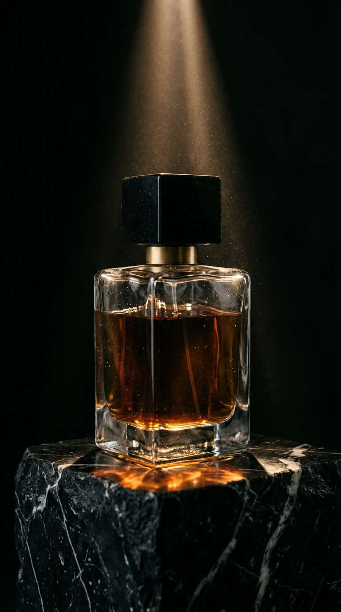
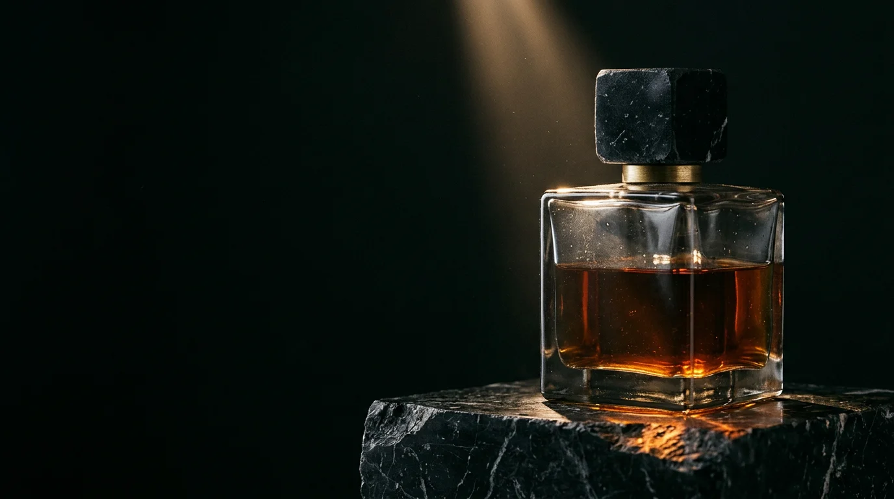

<title>Ombra Hero Options</title>
<link rel="preconnect" href="https://fonts.googleapis.com">
<link rel="preconnect" href="https://fonts.gstatic.com" crossorigin>
<link rel="stylesheet" href="https://fonts.googleapis.com/css2?family=Bodoni+Moda:opsz,wght@6..96,400;6..96,500&family=Italiana&family=IBM+Plex+Mono:wght@400&family=Syne:wght@400;500&family=Schibsted+Grotesk:wght@400;500&display=swap">
<style>
/* Three first-screen options for Ombra Milano, all built on the same real photograph */
:root {
  --stone: #0B0A09; --amber: #C8893E; --bone: #ECE4D6; --smoke: #948B7E; --line: rgba(236, 228, 214, .16);
  --gl: max(16px, env(safe-area-inset-left, 0px)); --gr: max(16px, env(safe-area-inset-right, 0px));
  --pad: clamp(0px, 3vw, 40px);
  color-scheme: dark;
}
* { box-sizing: border-box; }
body { margin: 0; background: var(--stone); color: var(--bone); font-family: "Schibsted Grotesk", Arial, sans-serif; line-height: 1.5; }
p, h1, h2, ul { margin: 0; }
a { color: inherit; }
img { display: block; }
:focus-visible { outline: 1px solid var(--amber); outline-offset: 4px; }
.tag { position: absolute; z-index: 20; top: 16px; left: 50%; transform: translateX(-50%); font: 12px/1 "IBM Plex Mono", monospace; letter-spacing: .1em; padding: 8px 14px; border: 1px solid var(--amber); border-radius: 999px; background: rgba(11, 10, 9, .7); color: var(--amber); white-space: nowrap; }
.hero { position: relative; height: 100svh; min-height: 640px; overflow: hidden; border-bottom: 1px solid var(--line); }
.cta { display: inline-flex; align-items: center; gap: 12px; padding: 15px 26px; border: 1px solid var(--amber); border-radius: 999px; text-decoration: none; font-size: 15px; position: relative; overflow: hidden; }
.cta::before { content: ""; position: absolute; inset: 0; background: linear-gradient(100deg, transparent 30%, rgba(200, 137, 62, .35) 50%, transparent 70%); transform: translateX(-110%); transition: transform 1.1s cubic-bezier(.3, 0, .2, 1); }
.cta:hover::before { transform: translateX(110%); }

/* ── A · Poster: the name is the architecture, the bottle stands in a doorway of type ── */
.poster { display: grid; grid-template-rows: auto 1fr auto; padding: 72px calc(var(--gr) + var(--pad)) 32px calc(var(--gl) + var(--pad)); }
.poster .mast { font-family: "Bodoni Moda", serif; font-weight: 400; font-size: clamp(72px, 19.5vw, 340px); line-height: .8; letter-spacing: -.035em; text-align: center; position: relative; z-index: 2; text-shadow: 0 0 60px rgba(0,0,0,.5); }
.poster .frame { position: absolute; left: 50%; top: 0; bottom: 0; width: min(34vw, 460px); transform: translateX(-50%); }
.poster .frame img { width: 100%; height: 100%; object-fit: cover; animation: settle 9s cubic-bezier(.2, 0, .1, 1) both; }
@keyframes settle { from { transform: scale(1.12); filter: brightness(.3); } }
.poster .foot { position: relative; z-index: 2; display: grid; grid-template-columns: 1fr auto 1fr; align-items: end; gap: 24px; font-size: 14px; color: var(--smoke); }
.poster .foot .r { text-align: right; }
.poster .mono { font-family: "IBM Plex Mono", monospace; font-size: 12px; letter-spacing: .08em; text-transform: uppercase; }
.poster .side { position: absolute; z-index: 2; top: 50%; font-family: "IBM Plex Mono", monospace; font-size: 12px; letter-spacing: .3em; text-transform: uppercase; color: var(--smoke); writing-mode: vertical-rl; transform: translateY(-50%); }
.poster .side.l { left: calc(var(--gl) + var(--pad)); transform: translateY(-50%) rotate(180deg); }
.poster .side.r { right: calc(var(--gr) + var(--pad)); }

/* ── B · Cinema: full-bleed still, the cursor is the light; type sits like a film subtitle ── */
.cinema img.base { position: absolute; inset: 0; width: 100%; height: 100%; object-fit: cover; filter: brightness(.38) saturate(.8); }
.cinema img.lit { position: absolute; inset: 0; width: 100%; height: 100%; object-fit: cover; filter: brightness(1.15) contrast(1.05);
  -webkit-mask-image: radial-gradient(circle 26vmin at var(--lx, 74%) var(--ly, 48%), #000 0, rgba(0,0,0,.6) 45%, transparent 100%);
          mask-image: radial-gradient(circle 26vmin at var(--lx, 74%) var(--ly, 48%), #000 0, rgba(0,0,0,.6) 45%, transparent 100%); }
.cinema::before, .cinema::after { content: ""; position: absolute; left: 0; right: 0; height: 9vh; background: #000; z-index: 3; }
.cinema::before { top: 0; } .cinema::after { bottom: 0; }
.cinema .nav { position: absolute; z-index: 4; top: 0; left: 0; right: 0; height: 9vh; display: flex; align-items: center; justify-content: space-between; padding-inline: calc(var(--gl) + var(--pad)); font-family: "Italiana", serif; font-size: 22px; letter-spacing: .4em; }
.cinema .nav a { font-family: "Schibsted Grotesk"; font-size: 13px; letter-spacing: .1em; text-transform: uppercase; text-decoration: none; color: var(--smoke); }
.cinema .sub { position: absolute; z-index: 4; left: 50%; bottom: calc(9vh + 40px); transform: translateX(-50%); width: min(92vw, 820px); text-align: center; display: grid; gap: 20px; justify-items: center; }
.cinema h2 { font-family: "Italiana", serif; font-weight: 400; font-size: clamp(34px, 4.6vw, 72px); line-height: 1.05; letter-spacing: .01em; }
.cinema .time { position: absolute; z-index: 4; bottom: 0; height: 9vh; left: 0; right: 0; display: flex; align-items: center; justify-content: space-between; padding-inline: calc(var(--gl) + var(--pad)); font: 12px "IBM Plex Mono", monospace; letter-spacing: .1em; color: var(--smoke); }

/* ── C · Index: the collection is the first thing you see; choosing a scent tints the liquid ── */
.index { display: grid; grid-template-columns: minmax(0, 7fr) minmax(0, 5fr); }
.index .list { padding: 96px calc(var(--pad) + 24px) 40px calc(var(--gl) + var(--pad)); display: grid; grid-template-rows: auto 1fr auto; gap: 32px; }
.index .brand { display: flex; justify-content: space-between; align-items: baseline; font-family: "Syne", sans-serif; font-weight: 500; font-size: 15px; letter-spacing: .3em; text-transform: uppercase; }
.index .brand span { font-family: "Schibsted Grotesk"; letter-spacing: .06em; text-transform: none; color: var(--smoke); font-size: 14px; }
.index ol { list-style: none; padding: 0; margin: 0; align-self: center; }
.index li button { all: unset; cursor: pointer; width: 100%; display: grid; grid-template-columns: 56px minmax(0, 1fr) 140px; align-items: baseline; gap: 16px; padding: 10px 0; border-top: 1px solid var(--line); color: var(--smoke); transition: color .5s; }
.index li:last-child button { border-bottom: 1px solid var(--line); }
.index li button:hover, .index li button:focus-visible, .index li button[aria-pressed="true"] { color: var(--bone); }
.index .n { font: 12px "IBM Plex Mono", monospace; }
.index .name { font-family: "Bodoni Moda", serif; font-size: clamp(30px, 3.6vw, 56px); line-height: 1.05; }
.index .note { font-size: 13px; text-align: right; }
.index .bottom { display: flex; justify-content: space-between; align-items: center; gap: 24px; flex-wrap: wrap; color: var(--smoke); font-size: 14px; }
.index .photo { position: relative; overflow: hidden; }
.index .photo img { position: absolute; inset: 0; width: 100%; height: 100%; object-fit: cover; transition: filter 1.4s cubic-bezier(.3, 0, .2, 1); }

@media (prefers-reduced-motion: reduce) { .poster .frame img { animation: none; } .cta::before, .index .photo img { transition: none; } }
@media (max-width: 760px) {
  .poster .frame { width: 64vw; }
  .poster .side { display: none; }
  .poster .foot { grid-template-columns: 1fr; text-align: center; justify-items: center; }
  .poster .foot .r, .poster .foot .l { display: none; }
  .index { grid-template-columns: 1fr; grid-template-rows: 42svh 1fr; }
  .index .photo { order: -1; }
  .index .list { padding: 24px var(--gr) 24px var(--gl); }
  .index li button { grid-template-columns: 36px minmax(0, 1fr); }
  .index .note { display: none; }
  .index .name { font-size: 28px; }
  .cinema img { object-position: 76% 50%; }
  .cinema .time span:nth-child(2) { display: none; }
  .cinema .nav a { display: none; }
  .index .brand { flex-direction: column; gap: 4px; }
}
</style>

<!-- A -->
<section class="hero poster" aria-labelledby="a-title">
  <p class="tag">A · Poster</p>
  <div class="frame"></div>
  <h1 class="mast" id="a-title">OMBRA</h1>
  <p class="side l">Brera · Milano</p>
  <p class="side r">Est. 2026</p>
  <div class="foot">
    <p class="l mono">Nº 3 Ambra Nera<br>Batch 07 · 120 bottles</p>
    <a class="cta" href="#">Book a consultation <span aria-hidden="true">→</span></a>
    <p class="r">Seven perfumes, poured by hand<br>into blown glass in Milan.</p>
  </div>
</section>

<!-- B -->
<section class="hero cinema" aria-labelledby="b-title">
  <p class="tag">B · Cinema</p>
  
  
  <div class="nav"><span>OMBRA</span><a href="#">Book a consultation</a></div>
  <div class="sub">
    <h2 id="b-title">Some scents are only found in the half-light.</h2>
    <a class="cta" href="#">Book a consultation <span aria-hidden="true">→</span></a>
  </div>
  <div class="time"><span>Brera, Milano</span><span>Move the light</span><span>Nº 3 · Ambra Nera</span></div>
</section>

<!-- C -->
<section class="hero index" aria-labelledby="c-title">
  <p class="tag">C · Index</p>
  <div class="list">
    <p class="brand"><b style="font-weight:500" id="c-title">Ombra Milano</b><span>Perfume house, Brera</span></p>
    <ol>
      <li><button type="button" data-f="hue-rotate(-12deg) saturate(1.2)"><span class="n">Nº 1</span><span class="name">Fumo di Brera</span><span class="note">incense · cedar</span></button></li>
      <li><button type="button" data-f="hue-rotate(28deg) saturate(.7) brightness(1.1)"><span class="n">Nº 2</span><span class="name">Fico Notturno</span><span class="note">fig leaf · milk</span></button></li>
      <li><button type="button" data-f="none" aria-pressed="true"><span class="n">Nº 3</span><span class="name">Ambra Nera</span><span class="note">amber · labdanum</span></button></li>
      <li><button type="button" data-f="hue-rotate(-38deg) saturate(1.3) brightness(.85)"><span class="n">Nº 4</span><span class="name">Rosa Scura</span><span class="note">rose · oud</span></button></li>
      <li><button type="button" data-f="hue-rotate(60deg) saturate(.5) brightness(1.15)"><span class="n">Nº 5</span><span class="name">Vetiver Grigio</span><span class="note">vetiver · rain</span></button></li>
      <li><button type="button" data-f="saturate(.25) brightness(1.2)"><span class="n">Nº 6</span><span class="name">Neve di Marmo</span><span class="note">iris · musk</span></button></li>
      <li><button type="button" data-f="hue-rotate(-20deg) saturate(1.5) brightness(.75)"><span class="n">Nº 7</span><span class="name">Ultima Luce</span><span class="note">tobacco · plum</span></button></li>
    </ol>
    <div class="bottom"><span>Seven perfumes, 120 bottles a batch.</span><a class="cta" href="#">Book a consultation <span aria-hidden="true">→</span></a></div>
  </div>
  <div class="photo"></div>
</section>

<script>
// B: the cursor carries the beam
const cinema = document.querySelector('.cinema');
cinema.addEventListener('pointermove', e => {
  const r = cinema.getBoundingClientRect();
  cinema.style.setProperty('--lx', `${(e.clientX - r.left) / r.width * 100}%`);
  cinema.style.setProperty('--ly', `${(e.clientY - r.top) / r.height * 100}%`);
});
// C: choosing a perfume changes the liquid's colour in the same bottle
const tint = document.getElementById('tint');
document.querySelectorAll('.index button').forEach(b => {
  const pick = () => {
    document.querySelectorAll('.index button').forEach(x => x.setAttribute('aria-pressed', x === b));
    tint.style.filter = b.dataset.f;
  };
  b.addEventListener('mouseenter', pick);
  b.addEventListener('click', pick);
});
</script>
